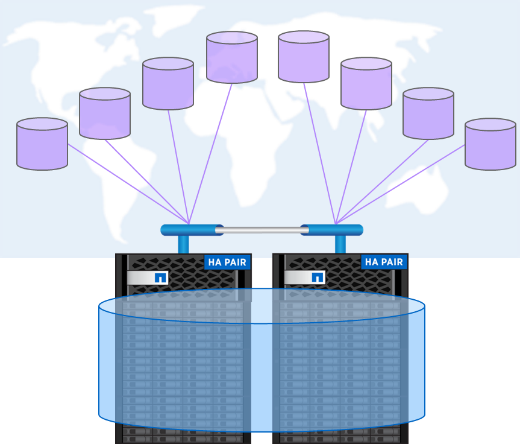

Demander de modifier un document
Demander de modifier un document Modifier sur GitHub
Modifier sur GitHub Guide des contributeurs
Guide des contributeursProtocoles de données
Contributeurs
Les protocoles de données désignent les méthodes d’accès aux données par les clients et les utilisateurs finaux avec le système de stockage NetApp ONTAP. NetApp ONTAP offre plusieurs interfaces officiellement prises en charge pour l’accès aux données sur la même plateforme de stockage, notamment :
-
NAS
-
SAN
-
S3
ONTAP 9.8 propose toute une gamme d’améliorations apportées aux protocoles de données ONTAP.
Améliorations du protocole NAS
Les protocoles NAS (Network Attached Storage) font référence aux méthodes de transfert basées sur les fichiers, telles que NFS et SMB/CIFS. Les améliorations suivantes ont été ajoutées à ONTAP 9.8 pour la prise en charge du protocole NAS, ainsi que des fonctionnalités qui s’appliquent spécifiquement à NAS, telles que les volumes NetApp FlexGroup et FlexCache.
Améliorations de NFS
ONTAP 9.8 offre les améliorations NFS suivantes :
-
NFSv4.2. offre une prise en charge de protocole NFSv4.2 de base et n’inclut pas les fonctionnalités NFSv4.2 telles que l’étiquetage. NFSv4.2 est activé lorsque NFSv4.1 est activé.
-
QoS (qtree Quality of Service). offre aux administrateurs de stockage la possibilité d’appliquer des niveaux de QoS maximaux et minimums aux qtrees de ONTAP. À l’heure actuelle, cette fonctionnalité est uniquement disponible avec les API REST et la ligne de commande. Elle n’inclut pas la prise en charge de la QoS adaptative, et n’est disponible que avec NFS.
Améliorations SMB/CIFS
ONTAP 9.8 offre les améliorations SMB/CIFS suivantes :
-
Connexions CC cryptées SMB3. cryptage sur le fil pour les connexions CC SMB.
-
Mapper SID à UID sur Set Owner (-map- sid-to- uid-on-set-owner). cette option contrôle si ONTAP mappe le SID Windows à un UID UNIX lors de la définition de la propriété sur des fichiers et des dossiers. L’option a été ajoutée pour améliorer l’expérience de migration des données pour les clients qui ont connu une charge accrue sur leurs serveurs Active Directory. La valeur par défaut est
true. (Correctif pour bug "1153207".) -
Set Modebas lorsque NFSv4_acl est hérité (-is-herive-modebas-with-nfsv4acl-enabled). Fournit la prise en charge des interactions NAS multiprotocoles lorsque des fichiers SMB sont créés dans des répertoires où les ACL NFSv4 ont supprimé la valeur par défaut
OWNER@,GROUP@, etEVERYONE@Les listes de contrôle d’accès, ou ces listes de contrôle d’accès, n’ont pas d’indicateurs d’hériter définis. La valeur par défaut estfalse. (Fixer à "bug 820848".)
Améliorations des volumes FlexCache
Les volumes NetApp FlexCache sont rares, les caches virtuels comprenant des volumes NetApp FlexGroup. Ces caches pointent vers un volume d’origine et chargent les données dans le cache lorsque les clients les demandent afin de fournir un accès rapide et localisé vers tout emplacement où vous exécutez ONTAP―, que ce soit dans le cloud, en périphérie ou dans le data Center―pour fournir un espace de noms véritablement global.

Pour plus d’informations sur les volumes FlexCache, voir "Tr-4743 : FlexCache dans ONTAP".
ONTAP 9.8 offre les améliorations suivantes des volumes FlexCache :
-
Prise en charge SMB/CIFS. NetApp FlexCache prend désormais en charge l’accès au cache pour les clients NFSv3 et SMB, ainsi que l’accès multiprotocole aux données NAS. FlexCache peut servir au verrouillage de fichiers localisé multisite pour les charges de travail intensives en lecture.
-
* Augmentation du rapport de sortie du ventilateur FlexCache.* ONTAP 9.8 fournit un rapport de sortie du ventilateur de 100:1. Auparavant, le ratio était de 10:1.
-
Les volumes FlexCache avec une origine secondaire SnapMirror les volumes FlexCache peuvent désormais être rattachés aux volumes secondaires SnapMirror, ce qui permet de décharger les opérations de lecture des systèmes de stockage primaires et de proposer un volume d’origine plus localisé géographiquement.
-
Invalidation du cache au niveau des blocs. au lieu d’invalider des fichiers entiers lors de l’éviction de données modifiées du cache, seuls les blocs qui ont changé sont désormais supprimés. Cela permet d’économiser de la capacité et de la charge du trafic WAN.
-
Pre-remplissage des caches. si vous avez un répertoire dans un volume que vous connaissez, vous pouvez désormais pré-remplir le cache avec le contenu de ce répertoire pour éliminer la latence de l’accès client initial.
Améliorations des volumes FlexGroup
Les volumes FlexGroup sont la solution NAS scale-out NetApp ONTAP. Elle offre jusqu’à 20 po et 400 milliards de fichiers dans un seul espace de noms. Ils offrent également un traitement parallèle avec équilibrage de charge des charges de travail à forte entrée, pour des raisons de capacité, de performance et de simplicité.

Pour plus d’informations sur les volumes FlexGroup, voir "Tr-4571 : bonnes pratiques pour NetApp FlexGroup volumes".
ONTAP 9.8 offre les améliorations suivantes des volumes FlexGroup :
-
Prise en charge de 1,023 copies Snapshot. les volumes NetApp FlexGroup peuvent désormais disposer de 1,023 copies Snapshot par volume. Grâce aux copies Snapshot supplémentaires, les volumes FlexGroup peuvent devenir plus viables à mesure que les destinations d’archivage, peuvent conserver un plus grand nombre de copies Snapshot fréquentes. Ils peuvent désormais prendre en charge les conversions FlexVol dont les ID de copie Snapshot sont supérieurs à 255.
-
Améliorations NDMP. la prise en charge NDMP pour les volumes FlexGroup a été ajoutée dans ONTAP 9.7 mais les options de fonctionnalités suivantes étaient manquantes :
-
ONTAP 9.8 ajoute la prise en charge de NDMP
-
EXCLURE
-
Extensions de secours redémarrables (RBE)
-
NOMS_SOUS-ARBORESCENCE_MULTIPLES
-
Amélioration des performances
Pour plus d’informations sur les volumes FlexGroup et NDMP, consultez "Tr-4678 : protection et sauvegarde des données - FlexGroup volumes".
-
-
FlexGroup prend en charge les volumes 7MTT. avant ONTAP 9.8, vous ne pouviez pas convertir un FlexVol qui avait été migré de 7-mode vers un volume FlexGroup. ONTAP 9.8 lève cette restriction.
-
Redimensionnement proactif. le redimensionnement proactif est une fonctionnalité de gestion de la capacité qui maintient une mémoire tampon d’espace libre dans les volumes membres de FlexGroup pour favoriser une distribution cohérente des performances et des capacités.
-
Clonage de fichiers vous pouvez désormais cloner des fichiers dans un volume FlexGroup à l’aide de VMware vSphere via la prise en charge de l’allègement de la charge des copies VAAI. Toutefois, le clonage de fichiers avec les API REST ou l’interface de ligne de commandes n’est pas pris en charge actuellement.
-
Prise en charge des datastores VMware. ONTAP 9.8 prend désormais en charge officiellement les volumes FlexGroup en tant que datastores VMware évolutifs. Cela signifie que :
-
Performances et placement validés
-
Qualification Interop
-
Prise en charge de Virtual Storage Console
-
Prise en charge des sauvegardes NetApp SnapCenter
-
Suppression asynchrone
La suppression asynchrone permet aux administrateurs du stockage de contourner la latence du réseau en supprimant les répertoires de l’interface de ligne de commande.
Si vous avez déjà essayé de supprimer un répertoire contenant de nombreux fichiers via NFS ou SMB, vous savez ce qu’il peut être laborieux. Chaque opération doit circuler sur le réseau via le protocole NAS que vous utilisez. Ensuite, ONTAP doit traiter ces demandes et y répondre. Selon la bande passante disponible sur le réseau, les spécifications client ou le système de stockage, ce processus peut prendre beaucoup de temps. La suppression asynchrone permet d’économiser beaucoup de temps et d’accélérer le retour aux clients.
Pour plus d’informations sur la suppression asynchrone, voir "Tr-4751 : bonnes pratiques pour NetApp FlexGroup volumes".
Améliorations SAN
Les protocoles SAN (Storage Area Network) désignent les méthodes de transfert des données basées sur les blocs, telles que FCP, iSCSI et NVMe over Fibre Channel. Les améliorations suivantes ont été ajoutées à ONTAP 9.8 pour la prise en charge du protocole SAN.
Baie SAN 100 % Flash (ASA)
ONTAP 9.7 a lancé une nouvelle plateforme SAN dédiée appelée "ASA", Avec l’objectif de simplifier les déploiements SAN de niveau 1 et de réduire considérablement les temps de basculement dans les environnements SAN en offrant une approche active/active de la connectivité SAN.
Pour en savoir plus sur la baie ASA, consultez la page "Ressources de documentation relatives à la baie SAN".
ONTAP 9.8 apporte quelques améliorations au système ASA, notamment :
-
Tailles de LUN et de volume FlexVol plus importantes. les LUN sur le système ASA peuvent désormais être provisionnées à 128 To ; les volumes FlexVol peuvent être de 300 To.
-
Prise en charge de MetroCluster sur IP. ASA peut désormais être utilisé pour les basculements de site sur les réseaux IP.
-
Prise en charge de SnapMirror Business Continuity (SM-BC) ASA peut être utilisé avec SnapMirror Business Continuity. xréf
-
Extension de l’écosystème hôte. prise en charge HP-UX, Solaris et AIX. Voir la "Matrice d’interopérabilité" pour plus d’informations.
-
Prise en charge des plates-formes A800 et A250.
-
Provisionnement simplifié dans System Manager.
Ports persistants
ASA propose une fonctionnalité d’amélioration appelée ports persistants pour améliorer les temps de basculement. Les ports persistants des systèmes ONTAP offrent davantage de résilience et d’accès continu aux données pour les hôtes SAN qui se connectent à un système ASA. Chaque nœud du ASA conserve les LIF Shadow Fibre Channel. Cette fonctionnalité est essentielle dans la manière dont ONTAP 9.8 réduit encore davantage le temps de basculement SAN pour le ASA. Ces LIFs conservent les mêmes ID des LIFs partenaires, mais elles restent en mode veille. En cas de basculement et si une LIF FC doit migrer vers le nœud partenaire, il n’est pas nécessaire de modifier les identifiants (ce qui peut augmenter les temps de basculement pendant que l’hôte négocie ce changement), le LIF shadow devient le nouveau chemin. L’hôte continue les E/S sur le même chemin, sur le même ID, sans notification de panne de liaison et sans configuration supplémentaire requise.
La figure suivante fournit un exemple de basculement pour les ports persistants.

NVMe/FC
NVMe est un nouveau protocole SAN qui améliore la latence et les performances de workloads en mode bloc par rapport aux protocoles FCP et iSCSI classiques.
Ce blog le couvre bien : "Lorsque vous mettez en œuvre NVMe over Fabrics, la Fabric compte vraiment".
NetApp a introduit la prise en charge de NVMe over Fibre Channel dans ONTAP 9.4 et a ajouté des améliorations de fonctionnalités à chaque version. ONTAP 9.8 offre les avantages suivants :
-
NVMe/FC sur le même SVM avec FCP et iSCSI. Vous pouvez désormais utiliser NVMe/FC sur les mêmes SVM que vos autres protocoles SAN, ce qui simplifie la gestion de vos environnements SAN.
-
Prise en charge de la structure de commutation SAN Gen 7. cette fonction ajoute la prise en charge des commutateurs SAN Gen-7 les plus récents.
Améliorations apportées à S3
Le stockage objet avec le protocole S3 est la dernière nouveauté de la gamme de protocoles ONTAP. Ajouté en tant que préversion publique de ONTAP 9.7, S3 est désormais un protocole entièrement pris en charge dans ONTAP 9.8.
La prise en charge de S3 inclut plusieurs composants :
-
ACCÈS PUT/GET de base aux objets (n’inclut pas l’accès aux protocoles S3 et NAS à partir du même compartiment)
-
Pas de balisage d’objets ou de prise en charge du ILM ; pour l’utilisation du protocole S3 riche en fonctionnalités et dispersé dans le monde entier "NetApp StorageGRID".
-
-
Chiffrement TLS 1.2
-
Téléchargements de pièces multiples
-
Ports réglables
-
Plusieurs compartiments par volume
-
Politiques d’accès aux compartiments
-
S3 en tant que cible NetApp FabricPool pour plus d’informations, consultez les ressources suivantes :
-
"Podcast Tech OnTap : épisode 268 - NetApp FabricPool et S3 dans ONTAP 9.8"